3. Blender の GUI で静止画を作る
2章で作ったモデルを Blender の画面で開き、見たい場所を探してカメラを置き、高画質の静止画として書き出します。画面写真はすべて Blender 5.0.0（日本語表示）の実際の画面です。
日本語表示にするには：Edit → Preferences → Interface → Translation で Language を「日本語 (Japanese)」にします。本ページでは日本語表示の項目名に英語名を併記します。
1. モデルを開く
output/heian_daidairi_detail_v7.blend をダブルクリックするか、Blender を起動して ファイル（File）→ 開く（Open）（Ctrl+O）で選びます。市街まで見たい場合は v8 を開きます（重いので最初は v7 がおすすめです）。
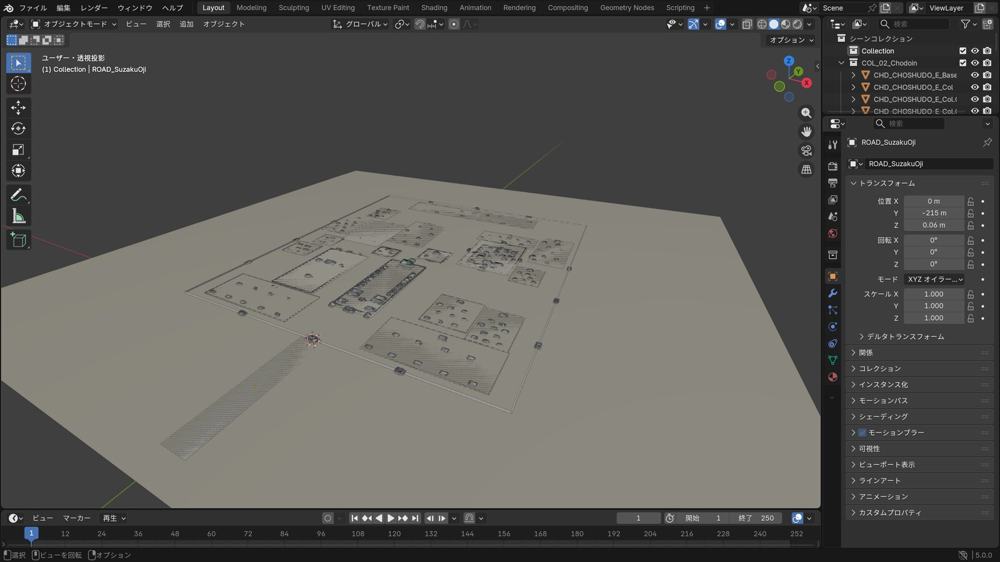
2. 視点を動かして見たい場所を探す
| 操作 | マウス | キーボード |
|---|---|---|
| 回転 | 中ボタンを押してドラッグ | テンキー 4682 |
| 平行移動 | Shift＋中ボタンドラッグ | Ctrl＋テンキー |
| 拡大・縮小 | ホイール | テンキー + - |
| 真上・正面・右から | 右上の軸ギズモの Z / Y / X をクリック | テンキー 7 / 1 / 3 |
| 選んだ物に寄る | アウトライナーで選んでから | テンキー .（ビュー → 選択をフレームイン） |
| 歩き回る | — | Shift+`（ウォーク／フライ。WASD で移動） |
テンキーが無いノートPCでは、編集 → プリファレンス → 入力 → テンキーを模倣 をオンにすると数字キーで代用できます。右上の手のひら・虫めがねアイコンをドラッグしても移動・拡大できます。
大内裏は東西約1.2km・南北約1.4kmあります。大極殿の位置は X=0, Y≒565（m）です。アウトライナーで CHD_Daigokuden_Roof などを選んでテンキー . を押すと、一気に寄れます。
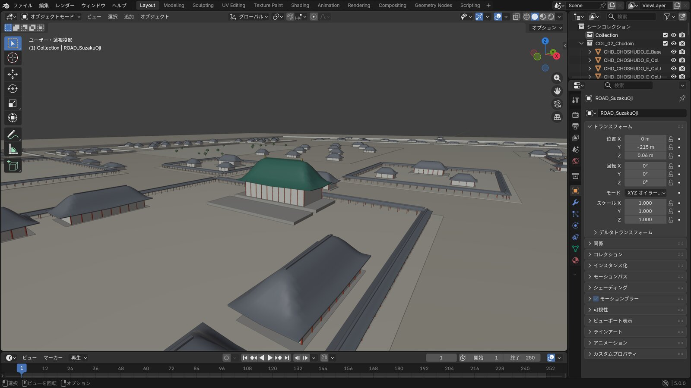
3. 表示モードを切り替えて仕上がりを確かめる
3Dビューポート右上の4つの丸いボタンで表示を切り替えます。左から ワイヤーフレーム、ソリッド、マテリアルプレビュー、レンダー（Z キーで円形メニューからも選べます）。
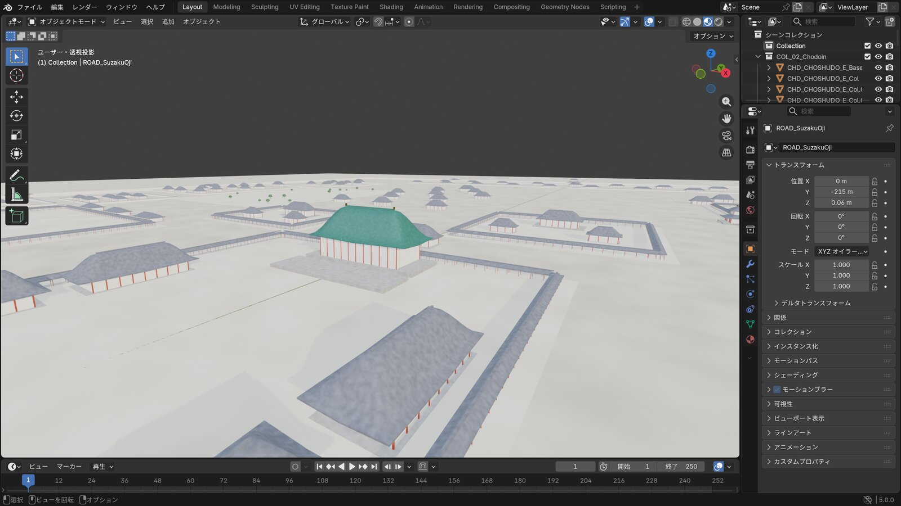
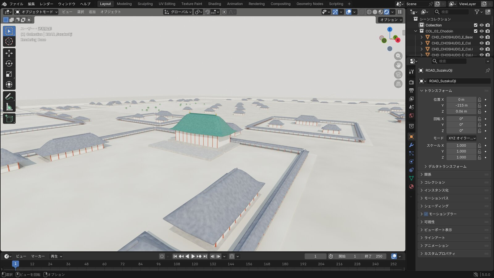
4. コレクションで表示する範囲を切り替える
生成物は種類ごとにコレクションへ分けてあります。アウトライナーの目のアイコンで表示・非表示、カメラのアイコンでレンダリングに含めるかを切り替えます。
| コレクション | 中身 |
|---|---|
COL_01_OuterWall_Gates | 外郭の門 |
COL_02_Chodoin | 朝堂院・大極殿・朱雀門・応天門など軸線上の建物 |
COL_03_Dairi | 内裏（紫宸殿・清涼殿・後宮） |
COL_04_Burakuin | 豊楽院 |
COL_05_Offices | 官衙ゾーン・中和院・真言院・宴の松原（棟配置は模式） |
COL_80_Conjectural | 推定レイヤー（確度D）。根拠データと分けて見たいときはここを非表示に |
COL_70_City | 市街レイヤー（v8のみ・模式生成） |
COL_90_Blockout | 外郭の築地、地面、朱雀大路などの文脈 |
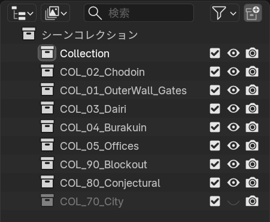
v8 で COL_70_City の目のアイコンを消し、大内裏だけを表示したところ（市街の行が灰色になる）。
アウトライナー右上の漏斗（フィルター）を開いて「オブジェクト」のチェックを外すと、この写真のようにコレクションだけの一覧になって見やすくなります。
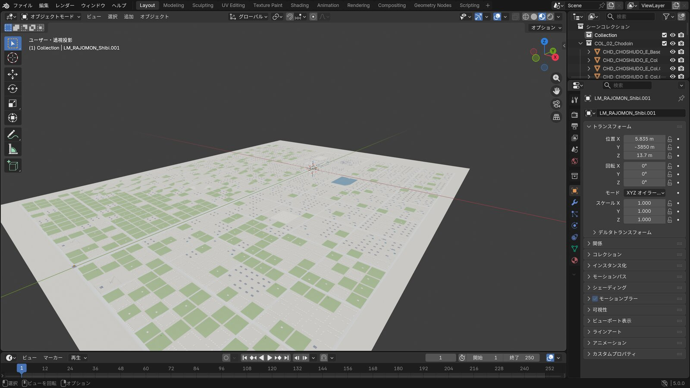
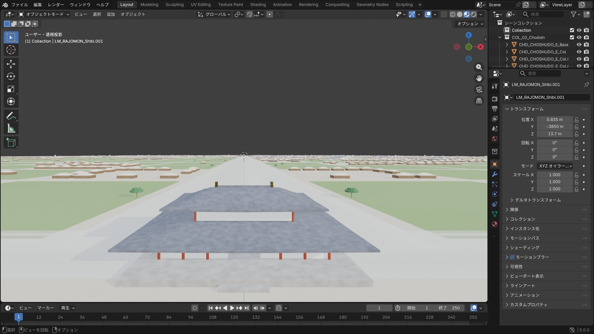
市街のように遠くまで広がる場面で、離れて見ると面がちらつく（四角が菱形に欠けるなど）ときは、サイドバー（N）の ビュー → クリップ開始 を 1〜2m に上げると直ります。
5. カメラを置く
静止画は「シーンのカメラ」から見た絵になります。v7 にはカメラが入っていないので、ひとつ追加します。
- 3Dビューポートで、撮りたい構図になるまで視点を動かす。
- 追加（Add）→ カメラ（Camera） でカメラを追加する。
- ビュー（View）→ 視点の揃え（Align View）→ アクティブカメラをビューに（Align Active Camera to View）（Ctrl+Alt+テンキー0）で、今の視点にカメラを合わせる。
- テンキー 0 でカメラ視点に入る。外側の暗い部分は写らない範囲です。
- 微調整は、サイドバー（N）の ビュー（View） タブで カメラをビューにロック（Lock Camera to View） をオンにすると、普段の視点操作でカメラごと動かせます。決まったらオフに戻します。
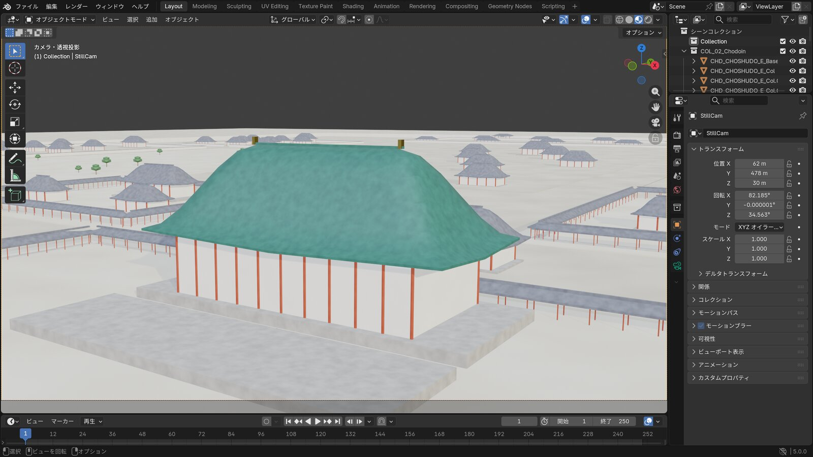
StillCam の位置（X=62m, Y=478m, Z=30m）が表示されている。数値を直接打ち込んで位置を決めることもできる。カメラを選んだ状態でプロパティの緑のカメラアイコン（オブジェクトデータ）を開くと、焦点距離 を変えられます。35〜40mm で人の目に近い広さ、24mm 以下で広角になります。建物を見上げる絵では、カメラを地上 1.5m 程度まで下げると迫力が出ます。
6. レンダー設定
プロパティの上から2番目、背面カメラの形のアイコンが レンダープロパティ です。
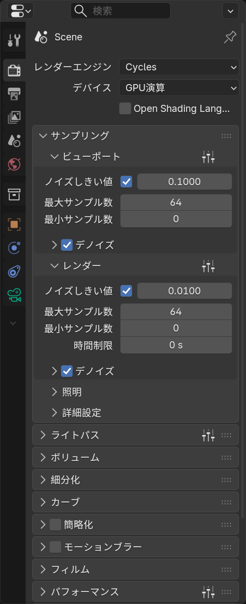
| 項目 | 設定 |
|---|---|
| レンダーエンジン | Cycles（このプロジェクトの質感・光は Cycles 前提） |
| デバイス | GPU演算。選べないときは 1章の手順4 でプリファレンスの GPU を有効にする |
| サンプリング → レンダー → 最大サンプル数 | 確認用 32、仕上げ 64〜256。多いほどザラつきが減る |
| デノイズ | オン。少ないサンプルでも滑らかになる |
| カラーマネジメント（下の方） | ビュー変換 Filmic、ルック Medium High Contrast（スクリプトの設定のまま） |
RTX 3060 で 1920×1080・64サンプル・デノイズありの実測は約14秒でした。
7. 出力設定（解像度）
その下のプリンターの形のアイコンが 出力プロパティ です。
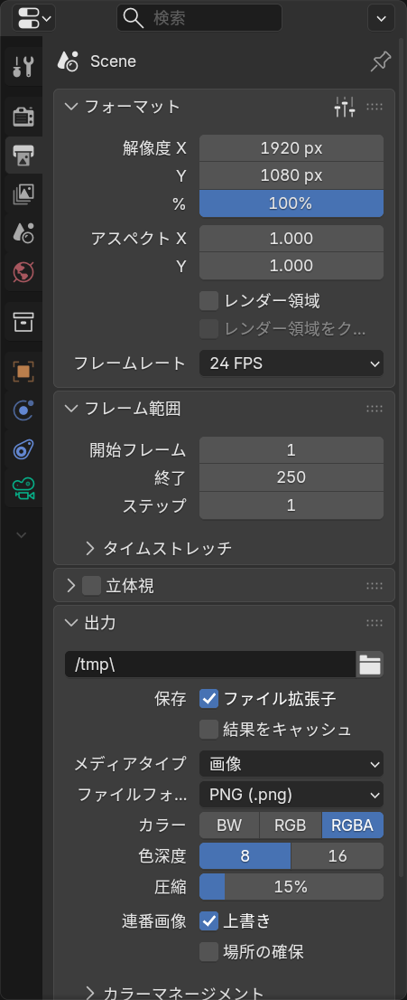
- 解像度 X / Y：1920 × 1080（フルHD）。印刷用なら 3840 × 2160 など。
- %：下書きのときは 50% にすると4倍速く描ける。
- 静止画の場合、下の「出力」欄のファイル形式は、手順8の保存時に選べるのでここでは触らなくて構いません。
8. レンダリングして保存する
- レンダー（Render）→ 画像をレンダリング（Render Image）（F12）。別ウィンドウが開き、少しずつ絵ができていきます。
- 出来上がったら、そのウィンドウの 画像（Image）→ 名前を付けて保存（Save As）（Shift+Alt+S）で PNG か JPEG として保存します。
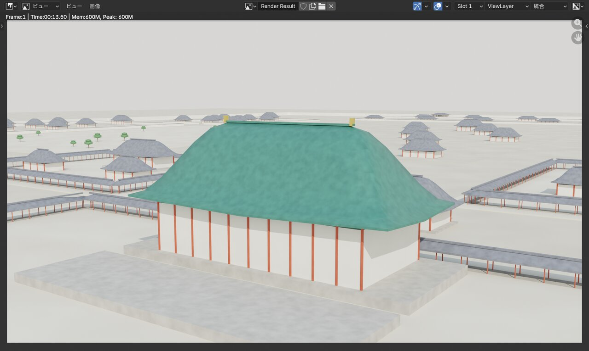
Frame:1 | Time:00:13.80 と描画時間が出る。メニューの「画像」から保存する。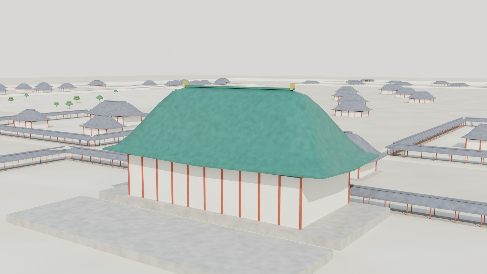
.blend を上書きするときの注意：カメラを足した .blend を保存（Ctrl+S）してもかまいませんが、スクリプトを再実行すると同じ名前のファイルは作り直されます。手作業の結果を残したいときは 名前を付けて保存 で別名（例：heian_v7_mycamera.blend）にしてください。
よく使うショートカット
| キー | 動作 |
|---|---|
| F12 | 静止画レンダリング |
| F11 | 最後のレンダー結果を再表示 |
| テンキー 0 | カメラ視点 |
| Ctrl+Alt+テンキー0 | カメラを今の視点に合わせる |
| Z | 表示モードの円形メニュー |
| N | サイドバーの表示／非表示 |
| H / Alt+H | 選んだ物を隠す／すべて再表示 |